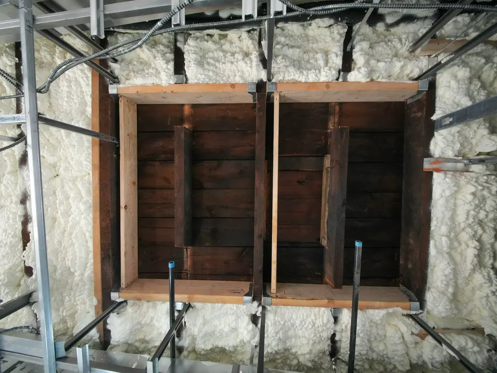

Wer ein älteres Haus energetisch verbessern will, steht vor vielen Einzelentscheidungen: Dach oder Fenster zuerst? Wärmepumpe jetzt oder später? Der individuelle Sanierungsfahrplan (iSFP) beantwortet genau diese Fragen – nicht mit Faustregeln, sondern mit einer Bestandsaufnahme Ihres konkreten Gebäudes.
Was der iSFP ist
Der iSFP ist ein standardisiertes Beratungsergebnis, das von der Bundesförderung für Energieberatung für Wohngebäude (BAFA) bezuschusst wird. Er zeigt in einer festgelegten Struktur, in welcher Reihenfolge Maßnahmen sinnvoll sind, was sie ungefähr kosten, welche Energieeinsparung sie bringen und welchen Zustand das Gebäude nach jedem Schritt erreicht.
Wichtig: Der iSFP verpflichtet zu nichts. Er ist ein Plan – umgesetzt wird, was zu Ihrem Budget und Zeitrahmen passt. Auch wer nur eine Maßnahme angeht, profitiert davon, dass sie zur Reihenfolge passt.
Warum die Reihenfolge zählt
Eine Wärmepumpe im ungedämmten Haus braucht hohe Vorlauftemperaturen und läuft ineffizient. Wer zuerst die Hülle verbessert, kann die Anlage kleiner auslegen und spart doppelt. Umgekehrt entstehen Sackgassen: Neue Fenster, die vor der Fassadendämmung in der alten Ebene eingebaut werden, erzeugen später Wärmebrücken, die sich nur teuer beheben lassen.
Was der iSFP für die Förderung bedeutet
- Die Erstellung des iSFP wird selbst über die Bundesförderung für Energieberatung bezuschusst.
- Für Einzelmaßnahmen an der Gebäudehülle und Anlagentechnik, die im iSFP enthalten sind, gibt es innerhalb der BEG einen zusätzlichen Bonus von fünf Prozentpunkten.
- Der förderfähige Höchstbetrag je Wohneinheit steigt mit iSFP von 30.000 € auf 60.000 € pro Jahr.
Die konkreten Fördersätze und Bedingungen ändern sich regelmäßig. Wir prüfen den aktuellen Stand, bevor ein Antrag gestellt wird – und stellen die Bestätigung zum Antrag aus.
So läuft es bei uns
Vor Ort erfassen wir Aufmaß, Bauteilaufbauten, Anlagentechnik und Verbrauchsdaten – bei Bedarf ergänzt um Thermografie und Luftdichtheitsmessung. Daraus entsteht der Fahrplan, den wir Ihnen ausführlich erklären. Auf Wunsch begleiten wir anschließend Ausschreibung, Angebotsprüfung und Ausführung.
Trifft das auf Ihr Gebäude zu?
Wir beraten in Aachen und München – bevor die Planung Fakten schafft.